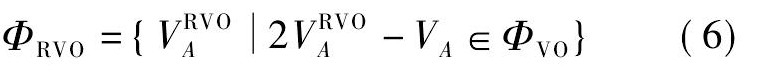

在python中，通过底层避障算法RVO实现多个智能体间的移动、互相躲避。
实验目的和要求 实现群组动画：
实现基于RVO的群组动画。
以基于RVO的方式完成动画中每个点的路径规划，中途做到每个点都避开其他点、障碍物，实现无碰撞。
实验内容和原理 实验内容:
预处理，计算出每个点的起点与终点
计算各个点的初速度
根据其他点、障碍物的位置不断修改当前的速度，找到实现无碰撞的速度和方向
按以上步骤循环，直到每个点都达到终点
输出结果
实验原理： VO和RVO是经典的底层避障算法。其中VO是最经典的，RVO则在VO的基础上进行了一些改进。
VO算法
要保证A与B不发生碰撞，VO算法的选择是将点A看作质点，B看作B’（A的半径加上B的半径），选择跟B‘不相交的速度方向。以后只要在每个周期里面，都选择不在VO的速度，就能够保证不会碰撞。
如图所示，排除Va'，留下Va
假设场景中有2个虚拟人A, B, 其半径和位置分别为$R_A, R_B, P_A, P_B,$ 速度分别为$V_A, V_B$。
虚拟人A, B把彼此当作具有一定速度的障碍物, 根据位姿空间理论，虚拟人A可被缩小为一个点$A^N$, 而虚拟人B可被扩大成半径为$R_B^N$的圆形$B^N$, 其中, $R_B^N=R_A+R_B$.根据相对运动理论, 假设B的新速度$V_B^N=0$, 即虚拟人B静止不动, 为保证运动的等价性, A的相对速度则为$V_A^N=V_A-V_B$。
RVO算法 核心思想: 优化VO思想, 假定对方也会采取避障行为, 缩小(average VO)速度。
相对速度障碍物 (RVO) 的定义:所有属于ΦVO的速度与当前速度VA的均值的集合, 其数学表述为

其几何表示为:将$Φ_{VO}$的端点从$V_B$移到$V_B$与$V_A$矢量和的一半, 如图3 (d) 中虚线区域所示.根据相对速度障碍物的定义, 下一时刻速度$V_A^N$只要不属于$ΦR_{VO}$即可保证虚拟人之间不会发生碰撞。
RVO对静态障碍的避碰 相对速度障碍物方法不仅可以解决虚拟人之间的避碰, 还可以实现虚拟人与静态障碍物的避碰.其躲避过程为:预处理、运动约束和相对速度障碍物方法应用.
预处理过程为:首先网格化静态障碍物, 然后获得其包围盒信息, 最后计算此包围盒的外接圆作为静态障碍物的最终表示形式.通过以上步骤, 静态障碍物与动态障碍物达到了表示形式的统一.
由于静态障碍物不会主动躲避虚拟人, 即速度为零, 所以其运动约束为
实验器材
实验步骤 预处理 初始化变量与每个点的位置、障碍物的位置。
1 2 3 4 5 6 7 8 9 10 11 12 13 14 15 16 17 18 19 20 21 goal_pos=[] now_pos=[] now_velocity=[] p_velocity=[] barriers=[] point_list=[] peopleSpeed = 1.5 radius=0.2 for theta in np.arange(0 , 360 , m): angle = math.radians(theta) goal = Position(-7.0 * math.cos(angle), -7.0 * math.sin(angle)) now_pos.append(Position(7.0 * math.cos(angle), 7.0 * math.sin(angle))) goal_pos.append(Position(-7.0 * math.cos(angle), -7.0 * math.sin(angle))) now_velocity.append(Velocity(0.0 , 0.0 )) point_list.append(num) num +=1 b = Barrier(-1.5 , 0.5 , 2.5 , 1.5 ) barriers.append(b)
主循环 该程序的主循环如下：
1 2 3 4 5 6 7 8 9 10 Animation() while len (point_list)>0 : goal_velocity = ToGoalVelocity() NowVelocityandPosition(goal_velocity) for i in point_list: if Distance(now_pos[i],goal_pos[i])<error: point_list.remove(i) t = t+1 Animation()
其中Distance函数计算两个点之间的距离，原理比较简单就不介绍了。在判断该点是否到达终点时，我们允许一个误差值error存在。即，当目前位置与终点的距离在误差值范围之内时，我们就认定该点到达了终点。
这是因为在固定时间步长内，有时会出现该点无法完美达到终点的状况。如果不允许一定的误差，有时候会出现该点一直在终点左右摇摆运动不停的情况。
计算个体速度 首先计算每个个体的初速度。此初速度为当个体不受任何其他个体以及障碍物影响下表现出的速度，也是每个点可能的最大速度。
表现为方向朝着目标，速度值（矢量长）为一个设定好的定值的速度。
1 2 3 4 5 6 7 8 9 10 11 12 def ToGoalVelocity (): goal_v = [] for i in range (N): dist = Distance(now_pos[i], goal_pos[i]) diff_x = goal_pos[i].x - now_pos[i].x diff_y = goal_pos[i].y - now_pos[i].y if dist >= error: goal_v.append(Velocity(diff_x * peopleSpeed / dist, diff_y * peopleSpeed / dist)) else : goal_v.append(Velocity(0.0 , 0.0 )) return goal_v
根据初速度、其他点与障碍物的位置来计算该点的真实速度。
计算过程首先是通过计算出来的初速度，在圆周内遍历可能的各个方向的速度，并计算当前速度下适合可能会发生碰撞
1 2 3 4 5 6 7 8 9 10 11 12 temp_v = [] m = Distance(toGoalvA, Velocity(0.0 , 0.0 )) if isCollision(toGoalvA, position_A, rel_BA) is False : temp_v.append(toGoalvA) for angle in np.arange(0 , 2 * math.pi, 0.1 ): for v in np.arange(0.02 , m + 0.02 , m / 5.0 ): new_v = Velocity(v * math.cos(angle), v * math.sin(angle)) if isCollision(new_v, position_A, rel_BA) is False : temp_v.append(new_v)
为了检测其他点与障碍物会不会在此速度下与该点发生碰撞，首先我们需要求出每个点与其他点的位置、角度、速度关系。
就像原理部分所说的，我们把A看作没有半径的质点，B的半径看作$R_B’=R_B+R_A$，根据新的半径、AB两点的距离来计算会发生碰撞的速度方向范围，我们用一个最左边的角，一个最右边的角来表示范围。
按此方法，我们计算出其他所有点会和当前点发生碰撞的范围。
1 2 3 4 5 6 7 8 9 10 11 12 13 14 15 16 def getRela (position_A, position_B, radius_A, radius_B,v_A,v_B ): RVO = Position(position_A.x + 0.5 * (v_A.x + v_B.x), position_A.y + 0.5 * (v_A.y + v_B.y)) distance_BA = Distance(position_A, position_B) distance_BA =max ( radius_A + radius_B,distance_BA) angle_BA = math.atan2(position_B.y - position_A.y, position_B.x - position_A.x) between_angle = math.asin((radius_B + radius_A) / distance_BA) left_angle = angle_BA + between_angle left_angle = math.atan2(math.sin(left_angle), math.cos(left_angle)) right_angle = angle_BA - between_angle right_angle = math.atan2(math.sin(right_angle), math.cos(right_angle)) rel=Relation(RVO,left_angle,right_angle, radius_A + radius_B, distance_BA) return rel
根据此范围，我们可以判断各个速度下是否会发生碰撞。
1 2 3 4 5 6 7 8 9 10 11 12 13 14 15 16 17 18 def isCollision (v, position_A, rel_BA ): for i in range (len (rel_BA)): position_AB = rel_BA[i].relation_positon left_angle = rel_BA[i].left_angle right_angle = rel_BA[i].right_angle diff_angle = math.atan2(v.y + position_A.y - position_AB.y, v.x + position_A.x - position_AB.x) if abs (right_angle - left_angle) <= math.pi: if right_angle <= diff_angle <= left_angle: return True else : if (left_angle < 0 ) and (right_angle > 0 ): left_angle = left_angle + 2 * math.pi if diff_angle < 0 : diff_angle = diff_angle + 2 * math.pi if right_angle <= diff_angle <= left_angle: return True return False
如果计算出当前没有速度符合不碰撞的要求，就设定当前速度为0，等待下次更新速度的时间。
更新位置 得到新速度后，根据设定好的时间间隔来更新当前点的位置
1 2 now_pos[i].x += new_v[i].x * T now_pos[i].y += new_v[i].y * T
最后使用绘制函数来绘制当前帧。
1 2 3 4 5 6 7 8 9 10 11 12 13 14 15 16 17 18 19 20 21 22 def Animation (): figure = pyplot.figure() ax = figure.add_subplot() pyplot.axis('off' ) ax.set_aspect('equal' ) ax.set_xlim(size[0 ], size[1 ]) ax.set_ylim(size[0 ], size[1 ]) for i in range (len (barriers)): ob = matplotlib.patches.Rectangle((barriers[i].position.x -barriers[i].height, barriers[i].position.y - barriers[i].width),2 * barriers[i].height, 2 * barriers[i].width,facecolor='red' ,fill=True ,alpha=1 ) ax.add_patch(ob) for i in range (N): point = matplotlib.patches.Circle((now_pos[i].x, now_pos[i].y),radius=radius,facecolor=color[i%16 ],ls='solid' ,alpha=1 ,zorder=2 ) ax.add_patch(point) pyplot.savefig(path+'/' +str (t)+'.png' ) fig=cv2.imread(path+'/' +str (t)+'.png' ) cv2.imshow("test" ,fig) out.write(fig) cv2.waitKey(10 ) pyplot.close(figure)
实验结果分析 实验中给每个个体设定的行走任务是走到圆中与自己位置的正对面位置。
一些问题 在实验过程中，其实还遇到了一些困难。比如我设置当前点没有找到合适的速度时，就在设置速度为0，原地等待到下一次速度选择。但是有时点、其他点、障碍物会达到一种平衡的状态，导某些点一直速度为0卡在原地。这证明我的算法中选择速度的部分还没有做得非常好。
如图，红色点和紫色点一直卡在障碍物周围回不去。
实验心得 在实验时，当个体集里的点处于一个密集的状态时，会出现轻微的抖动现象。
其实在知网中关于RVO算法的论文中已经提出了去除这种抖动现象的方法，即“停止规则”。可惜时间有限，在了解后没有应用在作业里，因此本作业里没有很好地消除抖动现象。